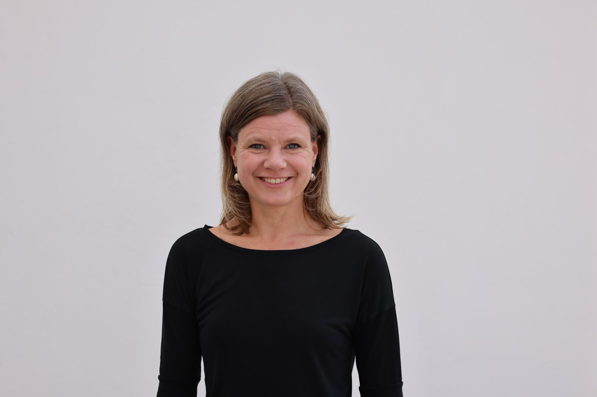
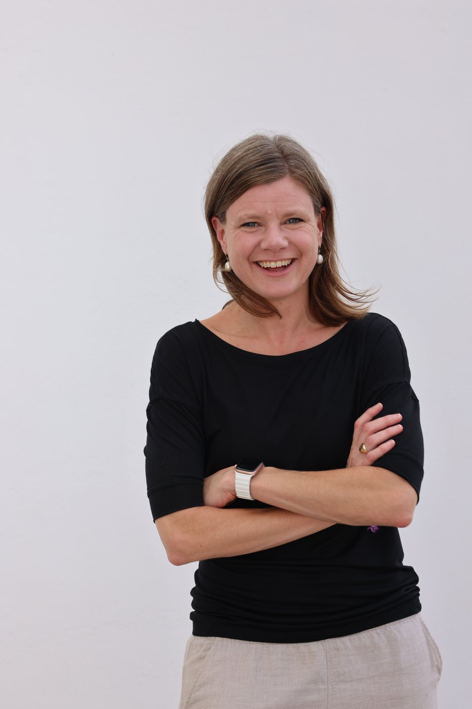

Helt sonika.
Karin
Stenstam
Steering teams through disruption and change — towards engagement and growth.
Based in South East Asia. Engagements across Asia and beyond.
Reach out on LinkedIn →
The moment
When growth has stalled. When the team is losing ground to disruption. When the gap between ambition and execution starts to cost real money.
That's when I'm useful.
Two ways to work
Change-leadership consulting
Rapid diagnosis. Reshape what's holding it back. Rebuild momentum.
Project-shaped, typically three to six months. I work alongside the leader, not above them. The deliverable is engaged teams that perform through uncertainty, not despite it.
Fractional or interim leadership
Inside the team, not outside it. Operating, not advising.
Typically two to four days a week for a defined window — long enough to land the change, short enough to keep the cost honest.
Both ways of working — Building to outlast me
The intention is always that the leaders who stay are equipped to lead the momentum forward after I'm gone. Sustainability over dependency. No need to keep me on the books.
A coaching leadership style runs through both modes — used in the engagement, not labelled as the engagement. Gallup-certified Clifton Strengths Coach.
Track record
A sixteen-year arc at EF Education First and its affiliated organisations — operations, people, commerce — across London, Zurich and Singapore. Most recent first.
-
Singapore · 2024–2026
Regional Sales Director · Hult Ashridge Executive Education
Most recent role. Commercial leadership in South East Asia.
-
London · 2021–2023
VP of Operations · Hult Ashridge Executive Education
Scaled the delivery team for corporate leadership programmes. 67% revenue growth in two years. 30 new hires onboarded. High-performance team rebuilt. Handed over to a nurtured internal successor.
-
London · 2018–2020
VP of People · Hult International Business School
Led global people strategy: initiatives identified through listening to the organisation, prioritised and implemented via cross-functional leadership and stakeholder management. Revitalised the performance review process. Upgraded manager training. Rolled out succession planning. Certified Clifton Strengths Coach during this period.
-
London · 2015–2018
Director of Operations · EF Education First
25 permanent and 500+ seasonal staff across 20+ destinations. Crisis leadership during operational disruption. Customer satisfaction exceeded targets in 20 of 23 destinations.
-
Zurich · 2013–2015
Regional Sales Manager · EF Education First
Three markets in decline. Matrix structure with no direct authority. Aligning competing priorities across Spain, France and Norway. From 20–25% sales decline to flat-to-9% growth across all three markets.
Before EF
System Implementation Consultant at Accenture, 2007–2010. Banking, telecom, pharma.
Engineering Physics MSc, Uppsala University. Diploma project at CERN.
Affiliations
EF Education First · Hult Ashridge Executive Education · Hult International Business School · Accenture · CERN · Uppsala University · Gallup
The shape of me

What drives me
Think with a commercial lens → Bring people with you → Get results.
A commercial lens. I'm wired for growth, improvement, evolution — not maintenance and status quo.
Bringing people with me. Charisma won't carry it. A title won't carry it. The work is mutual — engagement from the leader, engagement from the led. Rooms that move, not memos that circulate.
Getting results. I have persistence and grit. The stomach for the friction of front-line operations and sales — where the strategy meets reality.
What I bring
Engineering Physics MSc, Uppsala University. Diploma project in experimental high energy physics at CERN. Three years at Accenture. Sixteen at EF Education First and its affiliated organisations leading front line teams.
A hard-science brain that has spent two decades in the buzz of operational reality. The thread through all of it: curiosity about people — as customers, as humans.
In short
Built for organisations at inflection points.
Steering teams through disruption and change — towards engagement and growth.
The name
Helt sonika — a Swedish idiom. The closest English is "matter-of-factly," or "without further ado."
It's the phrase you'd use to describe someone who looked at the mess, made the call, and got on with it.
That's the operating mode.
Get in touch
Reach out on LinkedIn.
linkedin.com/in/karinstenstam →